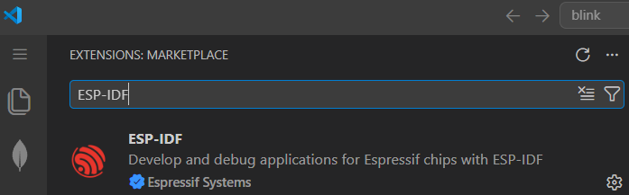
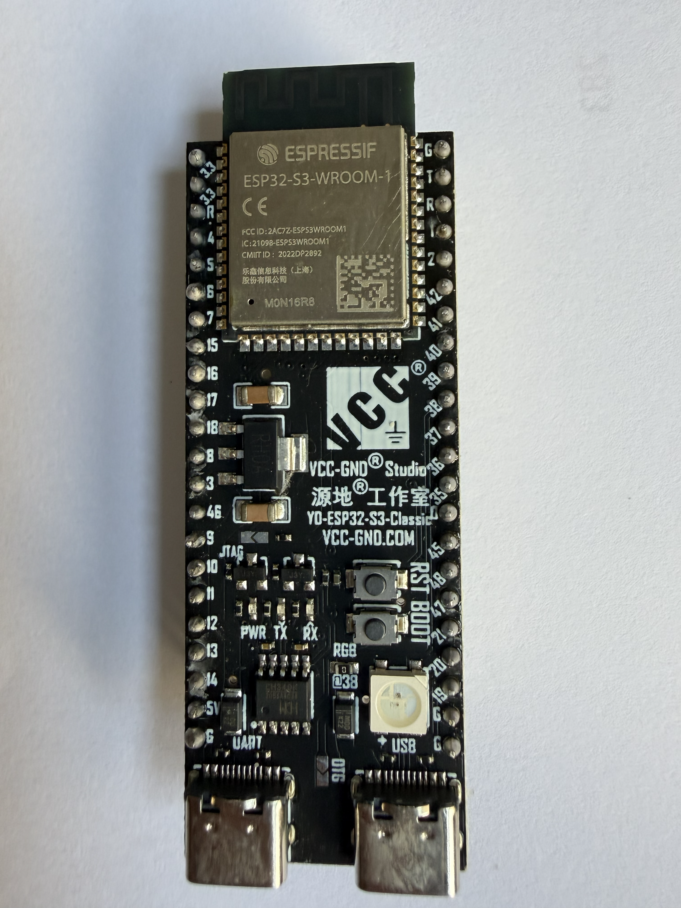
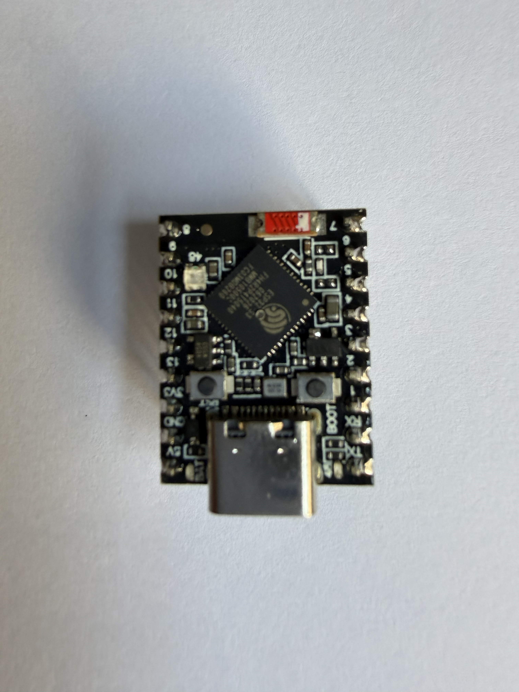

第1章 ESP-IDF
1.1 前言
兩種ESP-IDF安裝方式，參考資料：Espressif官網資料
、ESP-IDF GitHub
- 利用Command Line安裝，這種方式直接，容易掌控
- 利用VS Code安裝，這種方式較為簡單，容易上手
1.2 Command Line安裝
- 執行WSL(Windows Subsystem for Linux)
- 先安裝WSL(Windows Subsystem for Linux)
- 安裝Ubuntu 22.04 LTS
- 安裝Python
- 安裝Python 3.10以上版本
- 安裝Python3、Python3-venv、Python3-pip
- $ sudo apt update
- $ sudo apt upgrade
- $ sudo apt install python3 python3-venv python3-pip
- 安裝git、wget
- $ sudo apt install git wget
- 安裝工具鏈(tool chains)
- $ sudo apt install gcc git wget make libncurses-dev flex bison gperf python3 python3-pip python3-setuptools cmake ninja-build ccache libffi-dev libssl-dev dfu-util libusb-1.0-0
- 建立安裝ESP-IDF目錄
- $ mkdir -p ~/esp
- $ cd ~/esp
- 複製ESP-IDF安裝檔案
- $ git clone -b v6.0 --recursive https://github.com/espressif/esp-idf.git
- 安裝ESP-IDF，設定環境
- $ cd ./esp-idf
- $ ./install.sh
- $ . ./export.sh
- 確認版本
- 專案環境設定，設定環境變數
- $ cd ~/esp
- $ mkdir proj_20260513
- $ cd proj_20260513
- $ . ~/esp/esp-idf/export.sh
- 產生新專案
- $ idf.py create-project project_name
- 如project_name = proj_20260313，自動產生目錄proj_20260513
- 在目錄proj_20260513下產生CMakeLists.txt與目錄main，CMakeLists.txt內容
cmake_minimum_required(VERSION 3.22)
include($ENV{IDF_PATH}/tools/cmake/project.cmake)
project(proj_20260513)
- 在目錄main下產生另一個CMakeLists.txt與proj_20260513.c
- CMakeLists.txt註冊idf元件(函式庫)，SRCS設定相關程式碼，INCLUDE_DIRS內含目錄，內容
idf_component_register(SRCS "proj_20260513.c"
INCLUDE_DIRS ".")
- proj_20260513.c僅空架構，app_main為程式進入點，內容
#include <stdio.h>
void app_main(void)
{
}
- 設定ESP32型號，如esp32-s3
- $ idf.py set-target esp32s3
- 編譯指令
- 燒錄程式
先以系統管理員執行PowerShell或命令提示字元
確認串列埠
安裝usbipd
> winget install dorssel.usbipd-win
顯示所有連接的裝置
> usbipd list
假設串列埠id為2-1，綁定裝置指令
> usbipd bind --busid 2-1
連結用戶端，同時用於WSL系統
> usbipd attach --wsl --busid 2-1
至WSL，查詢裝置
$ ls /dev
-
如果有顯示ttyACM0，此串列埠可以連至ESP32進行程式燒錄作業
$ idf.py -p /dev/ttyACM0 flash
1.3 VS Code安裝ESP-IDF
- 執行Visual Studio Code，新增ESP-IDF擴充(Extension)

- Ctrl+Shift+X，開啟擴充選單
- 輸入關鍵詞ESP-IDF
- 點擊ESP-IDF進行安裝擴充項
- ESP-IDF安裝
- ESP-IDF圖塊出現在左側選單
- 點擊COMMANDS>>Advanced>>Open ESP-IDF Installation Manager
- 進行ESP-IDF安裝，過程中會提出一連串問題，如ESP32型號、安裝目錄等，第一次安裝，可以直接一路按Enter
- 一旦安裝完成，可以依據應用需求建立專案，編輯程式
- 產生專案
- 點選COMMANDS>>Advanced>>New Project Wizard，可以選系統提供的範例，如blink
- 或是選擇空專案，自己建立專案
- 通常利用這種方式，頗為費時。建議使用Command Line方式建立專案，然後再利用VS Code進行編輯程式
1.4 例題
例題1.1：利用ESP32-S3開發板執行在終端機顯示Hello ESP-IDF!字串任務
ESP32-S3

ESP32-S3 Super Mini
#include <stdio.h>
void app_main(void)
{
printf("Hello ESP-IDF!\n");
}
編譯、燒錄程式、執行：ESP32-S3已連上電腦
$ idf.py set-target esp32s3
$ idf.py build
$ idf.py -p /dev/ttyACM0 flash
$ idf.py monitor